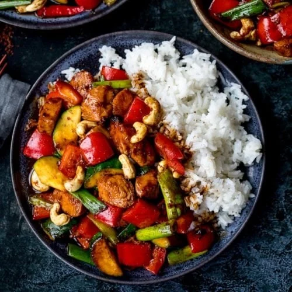
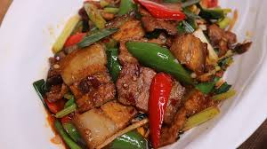
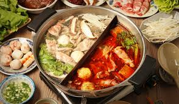

Sichuan cuisine, also known as Chuan cuisine. Originating from Sichuan Province, it is famous worldwide for its bold, spicy flavors and the characteristic numbing sensation brought by Sichuan peppercorns. This cuisine reflects the region's hot and humid climate, which the use of spices to preserve food and enhance flavor.
Sichuan cuisine features a diverse range of ingredients, from meats and poultry to vegetables and tofu. The cooking techniques are varied, including steaming, stir-frying, braising, and dry-frying. Each dish balances layers of flavor, combining spicy, sour, sweet, salty, and umami.
Kung Pao Chicken (宫保鸡丁): A popular dish made with stir-fried chicken, peanuts, chili peppers, and a sweet-and-savory sauce.
Twice-Cooked Pork (回锅肉): Pork belly slices are boiled and then stir-fried with chili bean paste, garlic, and vegetables, resulting in a flavorful dish.
Hot Pot (火锅): A communal dish where diners cook a variety of ingredients in a bubbling pot of spicy broth, perfect for sharing with friends.
  